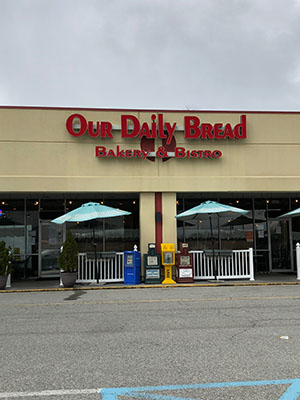
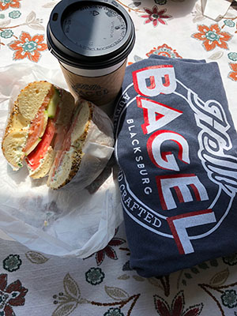
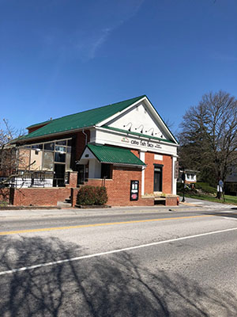
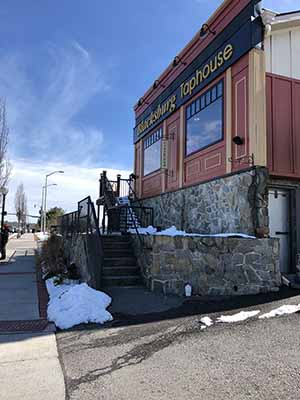
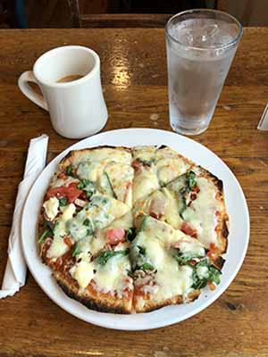
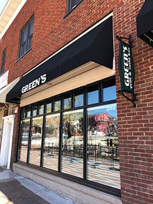
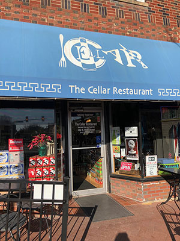
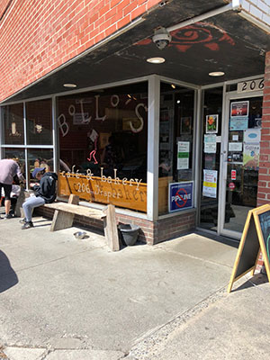
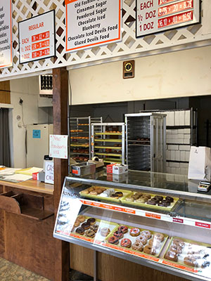

622 North
622 North Main St Blacksburg, VA 24060
Phone: (540) 951-1022
Restaurant & Wine Lounge:
Monday: 5pm-9pm
Tuesday-Friday:
11am-2pm & 5pm-9pm Saturday & Sunday:
10am-1pm & 5pm-9pm
This restaurant is located on North Main Street heading downtown; you’ll see it directly on the left after the traffic circle.
One of the classier restaurants in Blacksburg, 622 serves some of the best brunch and dinner in the area. This restaurant shares the same owner as the equally delicious Lefty's restaurant.

Front of ODB - Leah Clemens
Our Daily Bread Bakery & Bistro
1329 South Main Street Blacksburg, Virginia 24060
Phone: (540) 953-2815
Monday - Saturday 7:00 a.m. - 8:30 p.m.
Breakfast: Mon- Fri 7a.m.-11a.m Saturday - 7 a.m.-1p.m.
Dinner: 5:00 p.m. - 8:00 p.m.
The restaurant is in a shopping center next to Dollar Tree and across the street from South Main Kroger.
This little French bakery isn't in a very picturesque area, but it makes up for the lack of scenery with its fantastic food and cute interior. I love brunch, and theirs is delicious. You must stand in line to order, which can take a while, but once you take a number and a table, the food arrives quickly.

Yummy lox bagel - Leah Clemens
Hello Bagel
1344 S Main St #2, Blacksburg, VA 24060
Phone: (540) 953-7008
6:30am-2:30pm weekdays
7:30am-2:30pm weekends
Hello Bagel is in the same strip of buildings as Gucci Kroger
Hello Bagel is a cute little bagel and coffee shop on South Main. There's a huge variety of breakfast and lunch bagels to choose from. They also have a huge selection of ingredients for those who enjoy crafting their own bagel sandwich.

Cabo street view - Leah Clemens
Cabo Fish Taco
117 South Main Street Blacksburg, VA 24060
Phone: (540) 552-0950
Sun – Thurs 11 a.m. – 10 p.m.
Fri – Sat 11 a.m. – Late
Easy to spot on Main Street in downtown Blacksburg, across the street from Starbucks and the Kent Square Parking Garage.
When you get tired of hamburgers and sandwiches everywhere, Cabo is the perfect place for something a bit different. Their fish tacos and fajitas are amazing, and they offer vegan options as well. The restaurant was even featured by Guy Fieri on Food Network.

Taphouse looking good on a clear day - Leah Clemens
Blacksburg Taphouse
607 N. Main St. Blacksburg, VA 24060
Phone: (540) 552-3023
Mon – Sat 11 a.m. – 10 p.m.
Sun 10 a.m. – 10 p.m.
Brunch: Sun 10 a.m. - 2 p.m.
The Taphouse is across the road from Waffle House and Taco Bell and on the right side after the roundabout on North Main Street.
If you’re in the mood for a burger and some craft beer, then Blacksburg Taphouse is the place to go. With a steady menu of packed burgers, plus the weekly specials, there’s quite a few options to choose from. I also work there as a server, so here’s a tip: if you like the sound of a specific burger topping, you can add it to any other burger on the menu.

Vegetarian Pizza - Leah Clemens
Gillie's Restaurant
153 College Ave Blacksburg, VA 24060
Phone: 540-961-2703
Breakfast: Mon-Fri 7am-11am
Brunch: Sat-Sun 8am-2pm
Lunch: Mon-Sat 11am-3pm
Dinner: Mon-Thurs 5pm-9pm Fri-Sat 5pm-9:30pm
When heading downtown from the roundabout, turn right at the stop light before Moe’s, Gillies is at the end of the strip right before reaching Souvlaki.
One of the few healthier dining options in Blacksburg, Gillie’s is best known for its vegan and vegetarian meals. They also offer some locally made baked goods for customers on the go.

Green's street view - Leah Clemens
Green's Sushi Bar and Grille
109 College Ave Blacksburg, VA 24060
Phone: (540) 961-2020
Mon – Sun 11 a.m. – 11 p.m.
In the same strip of building as Gillie’s, Greens is located right between Moe’s and The Lyric Theater.
Green’s sushi is fantastic for a light lunch or early dinner. I really enjoy sitting in their outdoor area to enjoy my meal and some down time with friends. They also have a wonderful veggie burger.

Vintage Cellar entrance - Leah Clemens
The Cellar
302 North Main Street Blacksburg, VA 24060
Phone: (54) 953-0651
Sun – Sat 11 a.m. – 2 a.m.
Make a left at the College Ave. Stop light in front of Sharkey’s at the bottom of the hill. The restaurant has a bright blue covering out front and blue umbrellas.
The cellar is a great place to hang out and drink a few beers while listening to a local band perform live. The food is also very tasty and filling, with a semi-Italian themed menu. Adjacent to the restaurant is Vintage Cellar, a 6-PAK store with a fantastic selection of craft beers. Another section of the bar can be found beneath the restaurant in the basement.

Front of Bollo's cafe - Leah Clemens
Bollo's Cafe and Bakery
206 Draper Rd NW, Blacksburg, VA 24060
Phone: (540) 953-1669
Sun – Sat 7 a.m. – 8 p.m.
Make a left after Gillie’s, Bollo’s will be in the strip right after Rivermill. Across the street is She-Sha Café & Hookah Lounge.
This is a cute little Coffee shop that harbors the eclectic sort coming off campus. It also has a selection of the yummiest baked goods in Blacksburg. Many of their pastries are also available to those who prefer their food vegan or gluten free.

Carol Lee's selection - Leah Clemens
Carol Lee Donuts
1414 N Main St, Blacksburg, VA 24060
Phone: (540) 552-6706
6:30am-5:30pm
Along North Main across the street from Food Lion
If you enjoy delicious freshly baked donuts, then go to Carol Lee's! You can't go wrong with $8 per dozen. The donuts are absolutely amazing and it's a family owned shop, so you can't find them anywhere else.